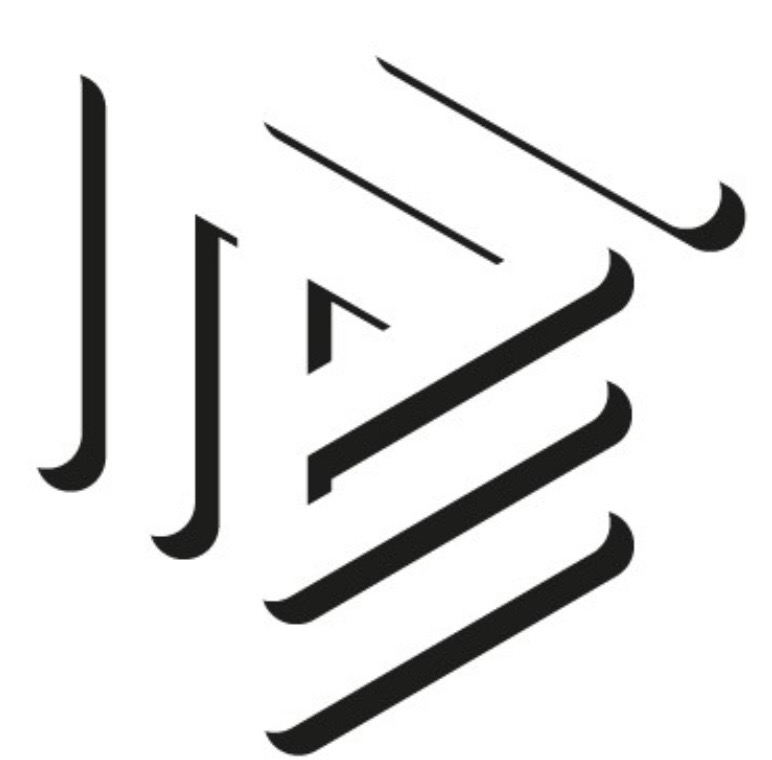

Gestione del personale
Dall’instaurazione del rapporto di lavoro alla cessazione, con supporto costante nelle dinamiche amministrative e organizzative.

Lo studio Iorio affianca imprese e professionisti nella gestione del personale, negli adempimenti del lavoro e nell’organizzazione dei rapporti con gli enti, con un approccio autorevole, chiaro e orientato alla continuità del servizio.
Da oltre 40 anni lo Studio Iorio rappresenta un punto di riferimento nella consulenza del lavoro.
Oggi siamo in fase di ampliamento del nostro pacchetto clienti, con l’obiettivo di affiancare nuove imprese nella gestione del personale e degli adempimenti.
Un supporto strutturato nella gestione del lavoro, degli adempimenti e delle esigenze aziendali, con attenzione alla correttezza normativa e all’efficienza organizzativa.
Dall’instaurazione del rapporto di lavoro alla cessazione, con supporto costante nelle dinamiche amministrative e organizzative.
Cedolini, CU, F24, Uniemens e gestione completa degli adempimenti periodici connessi al personale dipendente.
Gestione puntuale e conforme delle posizioni aziendali, con attenzione alle scadenze e alla correttezza formale.
Supporto nelle scelte aziendali, nella corretta applicazione dei contratti e nella gestione dei rapporti di lavoro.
Esperti nella gestione dei lavoratori edili, con attenzione agli aspetti contrattuali, contributivi e agli adempimenti specifici del settore.
Un riferimento professionale per aziende che cercano chiarezza, rapidità operativa e continuità nella consulenza del lavoro.
Studio Iorio unisce competenza, esperienza e visione moderna, offrendo soluzioni chiare, rapide e concrete per le imprese, con un’impostazione professionale orientata all’affidabilità, alla qualità del servizio e alla continuità del supporto.
Consulente del Lavoro iscritta all’Ordine di Napoli dal 1987.
Professionista delle risorse umane con una consolidata esperienza in aziende di diversi settori, si occupa della gestione completa del rapporto di lavoro, dall’assunzione fino alla cessazione.
Docente abilitata all’insegnamento delle scienze umane, oggi si dedica in particolare alla formazione per aziende e privati, con un approccio pratico e orientato al valore.
Dottoressa in Giurisprudenza e Consulente del Lavoro abilitata, iscritta all’Ordine di Napoli.
Si occupa di consulenza e gestione operativa dei rapporti di lavoro, affiancando le imprese negli adempimenti e nelle dinamiche quotidiane legate al personale.
Unisce preparazione giuridica e approccio pratico, offrendo supporto concreto, preciso e orientato alle esigenze delle aziende.
Un’impostazione professionale fondata su esperienza, affidabilità e attenzione concreta alle esigenze delle imprese.
Una presenza professionale costruita nel tempo, con una visione orientata all'equilibrio tra esigenze aziendali ed applicazione normativa .
Supporto concreto, linguaggio chiaro e attenzione alla corretta gestione degli adempimenti e delle dinamiche aziendali.
Un riferimento affidabile per aziende che cercano continuità, precisione e una consulenza realmente utile alle decisioni quotidiane.
Consulenza del lavoro, formazione e gestione dei rapporti con gli enti, con particolare attenzione anche al settore edile.
Per informazioni o per un primo contatto conoscitivo, è possibile scrivere direttamente allo Studio.